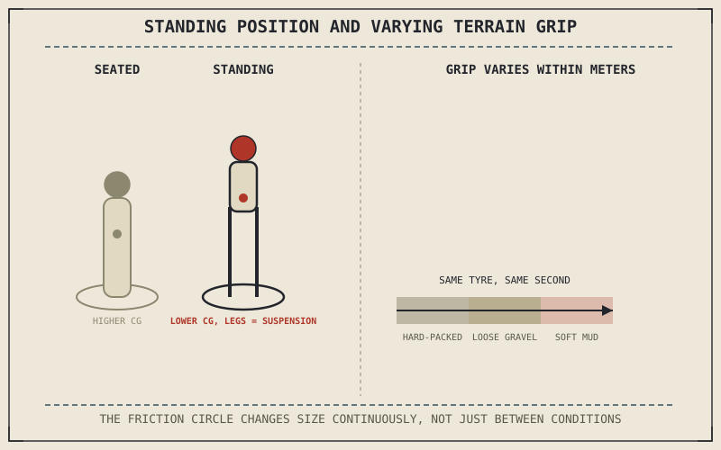

Chapter 5.10 already described off-road suspension setup as favoring long travel and progressive resistance to absorb sudden, large, unpredictable inputs — rocks, ruts, and drops that a paved-road friction circle never has to account for. Riding technique on that same terrain has to change just as fundamentally, because a loose, uneven, constantly shifting surface breaks several assumptions this part's road-focused chapters have relied on throughout.
Chapter 9.12 closed by naming off-road fundamentals as this chapter's subject, where the surface itself changes rather than grip or visibility alone. This chapter covers that subject.
Standing Changes the Combined Center of Mass Fundamentally
Chapter 9.1 established that a rider's body position directly shifts the combined center of mass Chapter 8.3's lean-angle math depends on, and standing on the footpegs, the default off-road riding position, is the most dramatic version of that shift this book has described. Standing lowers the combined center of mass toward the motorcycle's own chassis and suspension, since the rider's mass moves closer to being carried through the legs directly onto the pegs rather than through a seated position higher up, and it lets the rider's legs act as an additional layer of suspension, absorbing sudden vertical inputs the seat-mounted suspension from Chapter 5.10 can't fully manage alone on severe terrain.
Grip Varies Constantly, Not Just Between Conditions
Chapter 9.11 described rain shrinking the friction circle to a smaller, but still fairly consistent, size. Off-road terrain doesn't offer that consistency at all — grip can shift from a hard-packed section to loose gravel to soft mud within a few meters, meaning the friction circle Chapter 6.4 established isn't just smaller off-road, it's constantly and unpredictably changing size as the surface itself changes beneath the tyre. This is the central technical challenge of off-road riding: nearly every technique this part has covered assumed a friction circle that changes gradually, if at all, and off-road terrain violates that assumption more or less continuously.
Standing lowers the combined center of mass and turns a rider's legs into an extra layer of suspension — a direct, deliberate application of the body-position physics this book established, taken further than any paved-road technique asks for.

A rider shown seated versus standing on the footpegs off-road, with the combined center of mass position and the rider's legs acting as additional suspension travel labeled, alongside a strip of terrain showing grip varying continuously from hard-packed to loose gravel to mud.
Momentum as a Substitute for Consistent Grip
Because available grip off-road is unpredictable rather than simply reduced, off-road technique often relies on maintaining steady momentum through loose sections rather than the smooth-but-cautious speed management Chapter 9.11 recommended for rain — a wheel briefly encountering very low grip on a patch of sand or loose rock benefits from carrying enough momentum to roll through that section rather than slowing so much that the tyre has to generate cornering or driving force precisely where the friction circle is smallest. This is a genuinely different strategy from road riding's instinct to slow down whenever grip is uncertain, and it's specific to terrain where grip loss is brief and localized rather than a sustained condition.
A Common Misconception, Cleared Up Early
It's tempting to assume off-road technique is simply road technique applied more cautiously to a rougher surface. Standing, momentum management through low-grip sections, and constant weight-shifting to track rapidly changing terrain are each specific adaptations to conditions road riding never presents, not a cautious version of the same underlying approach. A skilled road rider without off-road-specific technique will often ride off-road less effectively than a less experienced rider who has specifically learned these adaptations, since the two environments genuinely reward different instincts.
Where This Leads
Standing and momentum management set up the body position and general approach off-road riding requires. Braking and throttle control on loose, unpredictable surfaces demand their own specific technique, building directly on this chapter's foundation. Chapter 9.14 turns to that next.
Key Concepts to Remember
- Standing on the footpegs lowers the combined center of mass and lets the rider's legs act as an additional layer of suspension.
- Off-road grip varies continuously and unpredictably within short distances, unlike rain's more consistent, if smaller, friction circle.
- Maintaining steady momentum through brief low-grip sections is often more effective off-road than slowing down, the opposite of typical road-riding instinct.
Cross-References
| ← Ch. 5.10 | Established off-road suspension favoring long travel and progressive resistance; this chapter shows rider technique adapting to the same demanding terrain. |
| ← Ch. 9.1 | Established body position directly shifting the combined center of mass; this chapter shows standing as the most extreme application of that principle. |
| ← Ch. 6.4 | Established the friction circle governing available grip; this chapter shows that circle changing size continuously and unpredictably off-road. |
| → Ch. 9.14 | Covers off-road braking and throttle control, building on this chapter's standing position and momentum-management foundation. |